TaskMaster es una aplicación de escritorio para la gestión de tareas y proyectos personales y profesionales. Permite organizar el trabajo por categorías, hacer seguimiento del tiempo invertido y consultar estadísticas de productividad, todo desde una interfaz local sin necesidad de conexión a internet.
Este manual describe todas las funcionalidades disponibles en la versión actual de la aplicación.
Al abrir TaskMaster por primera vez se muestra la pantalla de inicio de sesión. Para registrarse, haz clic en el enlace Regístrate y rellena el formulario con los datos requeridos.
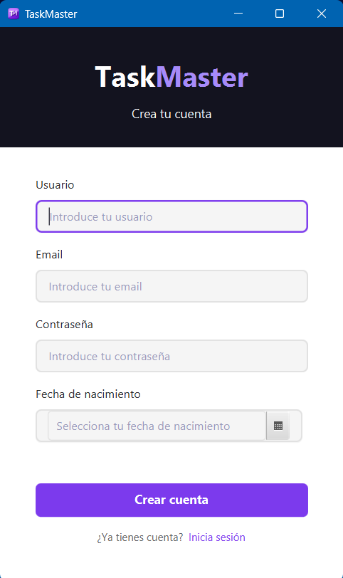
Si ya tienes cuenta, introduce tu nombre de usuario o correo electrónico y tu contraseña, y pulsa Iniciar sesión.
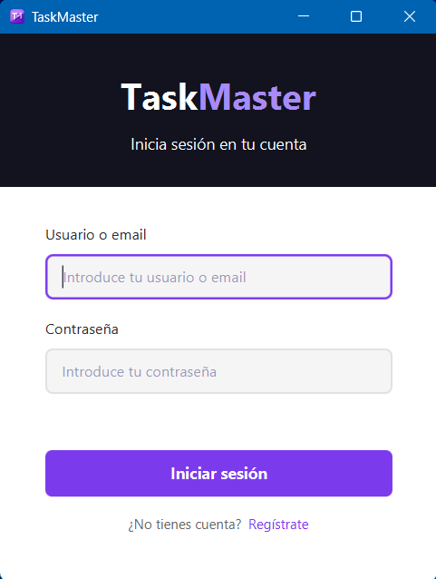
Una vez autenticado, la interfaz principal se divide en tres zonas: la barra superior, la barra lateral y el área de contenido central.
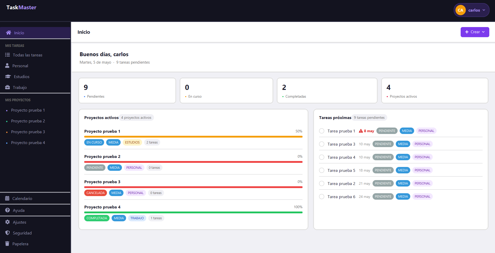
La barra superior está siempre visible. A la derecha aparece un botón con el nombre de usuario. Al hacer clic se despliega un menú con dos opciones:
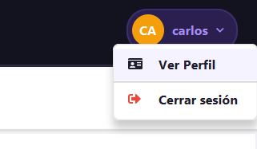
El sidebar permite navegar entre todas las secciones de la aplicación, organizado en cuatro grupos:
En la sección Proyectos, al hacer clic en el nombre de un proyecto se accede a sus detalles. El botón ··· a la derecha despliega un menú con las opciones Editar y Eliminar.
La pantalla de inicio es la vista principal de TaskMaster tras iniciar sesión. Muestra un resumen del estado actual: fecha, estadísticas rápidas, proyectos activos y tareas recientes.
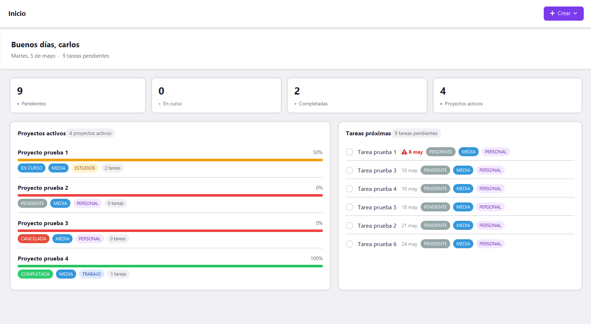
En la parte superior se muestra un saludo de bienvenida, la fecha de hoy y el recuento de tareas pendientes.
El botón + Crear abre un menú con dos opciones: Nuevo proyecto y Nueva tarea.
Cuatro contadores muestran el estado global: tareas pendientes, en curso, completadas y número de proyectos activos.
Listado de proyectos activos, cada uno con una barra de progreso. Al hacer clic en el nombre se accede a los detalles del proyecto.
Tareas recientes con casilla de verificación para marcarlas como completadas y enlace al detalle al hacer clic en el título. Las completadas aparecen tachadas.
Las secciones Todas las tareas, Personal, Estudios y Trabajo muestran el mismo listado de tareas filtrado por categoría. Todas ellas comparten la misma barra de herramientas.
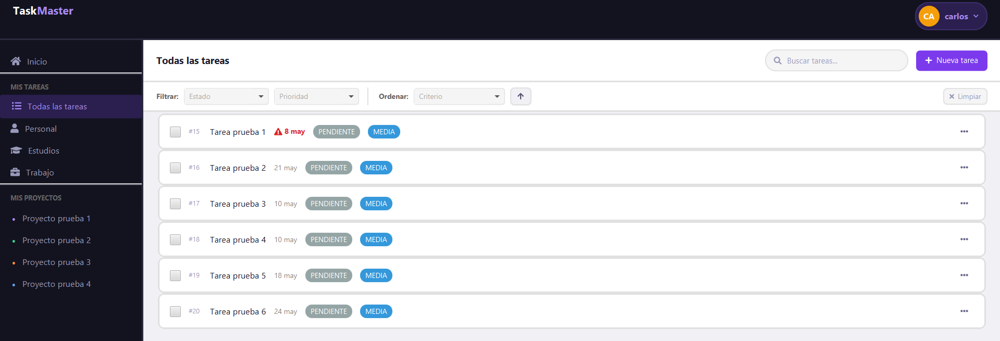
La barra de herramientas incluye:
Cada fila de tarea muestra la casilla de verificación, el título, badges de prioridad y estado, y el botón ··· que despliega las opciones Editar y Eliminar. Al hacer clic en el título se accede al detalle de la tarea.
El diálogo de creación de tarea se abre desde el botón + Nueva tarea o desde el menú + Crear del Home.
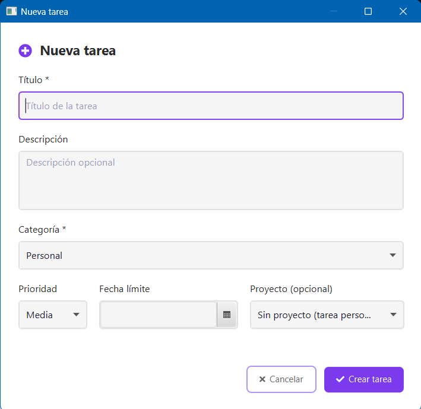
Los campos disponibles son:
Al hacer clic en el título de una tarea se abre su pantalla de detalles.
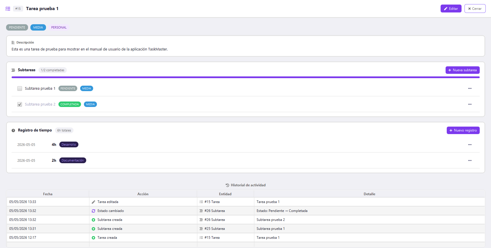
La pantalla de detalles muestra:
Las subtareas son tareas hijas asociadas a una tarea padre. Se crean desde el botón + Nueva subtarea en los detalles de la tarea. El formulario de creación incluye solo los campos título, descripción y prioridad.
Al hacer clic en el título de una subtarea se accede a su pantalla de detalles, que es idéntica a la de una tarea pero sin la sección de subtareas anidadas. Incluye badges de estado, prioridad y categoría, descripción, registros de tiempo e historial de actividad.
Los registros de tiempo permiten llevar un seguimiento del esfuerzo dedicado a cada tarea o subtarea. Se crean desde el botón + Nuevo registro en la pantalla de detalles.
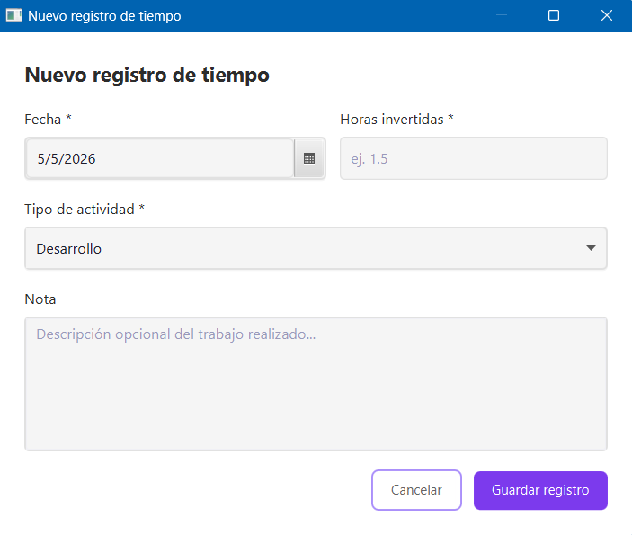
Los campos del registro son:
Los proyectos activos se muestran tanto en el Home como en el sidebar. Desde ambos lugares se puede acceder a sus detalles haciendo clic en el nombre. El botón ··· del sidebar permite editar o eliminar directamente cualquier proyecto.
El diálogo de creación de proyecto se abre desde el botón + Crear -> Nuevo proyecto del Home.
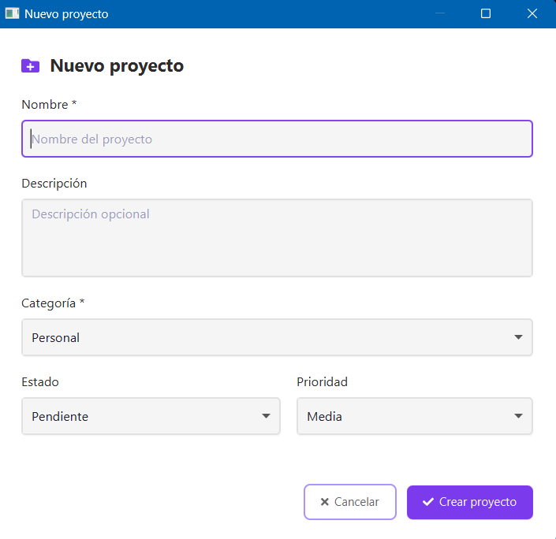
Al hacer clic en el nombre de un proyecto se abre su pantalla de detalles.
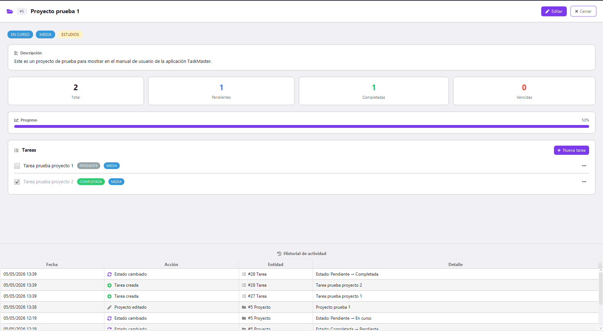
La pantalla de detalles incluye:
La sección Calendario se accede desde el sidebar y muestra una vista mensual con las fechas límite de todas las tareas distribuidas en sus días correspondientes.
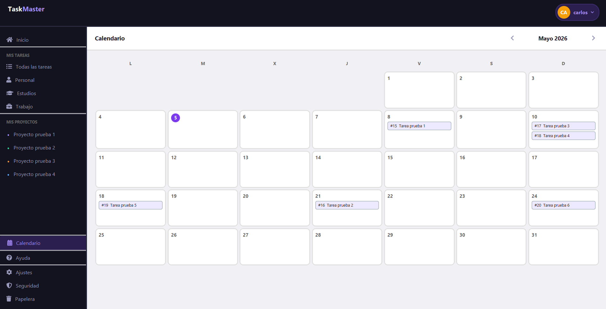
El calendario muestra el mes actual con todos los días de la semana. Las tareas con fecha límite aparecen resaltadas en sus días correspondientes. Esto permite identificar de un vistazo los días con mayor carga de trabajo y las fechas próximas a vencer.
La papelera almacena temporalmente las tareas y proyectos eliminados antes de su borrado definitivo. Se accede desde el sidebar.
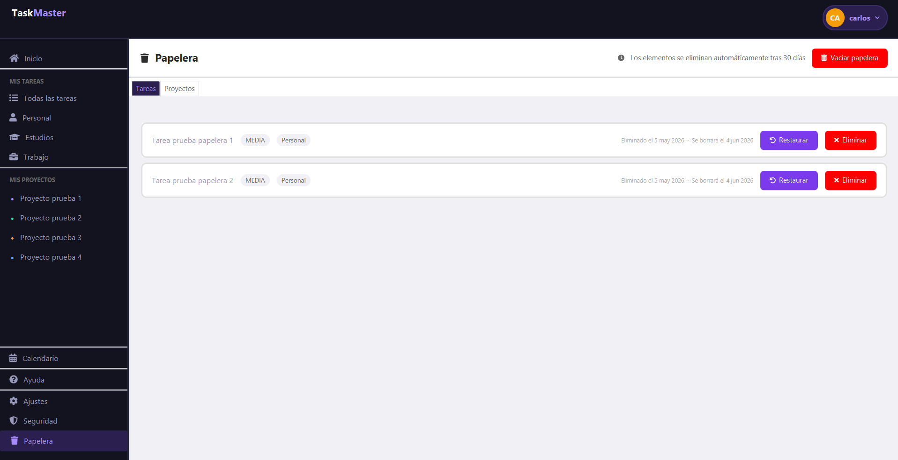
Cada elemento de la papelera muestra el nombre, la fecha de eliminación y la fecha en que se borrará definitivamente. Las opciones disponibles para cada elemento son:
El botón Vaciar papelera, situado en la parte superior de la pantalla, elimina de forma permanente todos los elementos de la papelera de una sola vez, sin necesidad de borrarlos individualmente.
La pantalla de perfil se abre desde el menú desplegable del top bar, opción Ver perfil.
La pantalla muestra los datos del usuario: nombre de usuario, correo electrónico, fecha de nacimiento y fecha de creación de la cuenta.
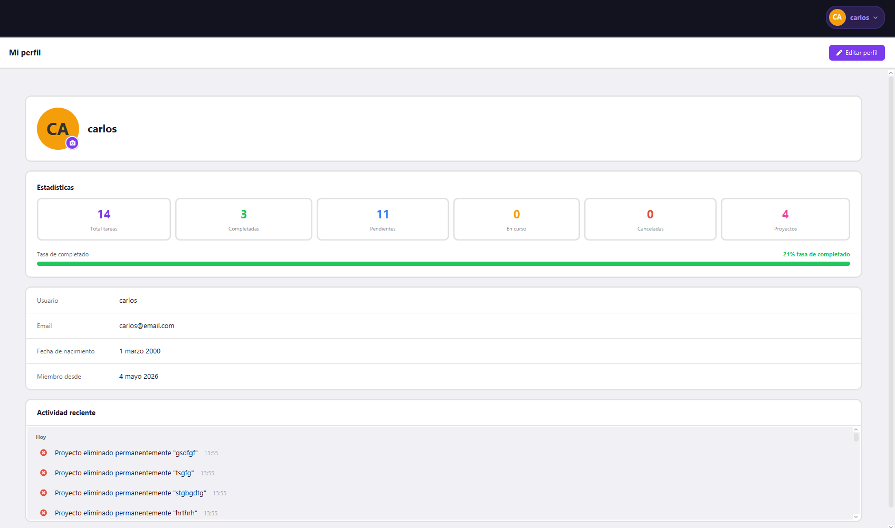
El botón Editar perfil abre un diálogo donde se pueden modificar el nombre de usuario, el correo electrónico y la fecha de nacimiento.
Desde la pantalla de perfil hay un botón para gestionar la foto de perfil. Las opciones disponibles son Añadir foto, Cambiar foto y Eliminar foto.
La pantalla de perfil también muestra estadísticas de productividad calculadas en tiempo real: total de tareas, tareas completadas, tareas pendientes, tareas en curso, tareas canceladas y proyectos activos.
Debajo de las estadísticas aparece el historial de actividad reciente con los últimos cambios realizados en la cuenta: creaciones, modificaciones, cambios de estado y actualizaciones de perfil.
La pantalla de seguridad se accede desde el sidebar. Centraliza las opciones de gestión de acceso y los registros de sesión.
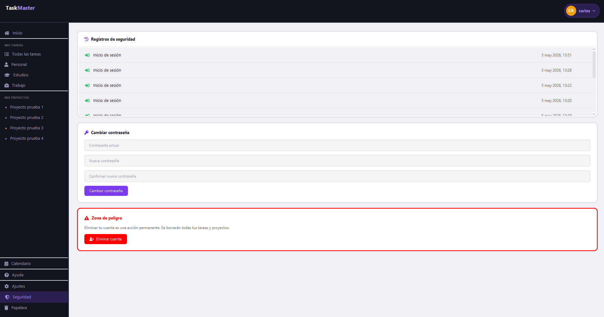
La pantalla de seguridad incluye tres bloques:
La pantalla de ajustes permite personalizar el comportamiento y la apariencia de la aplicación. Se accede desde el sidebar.
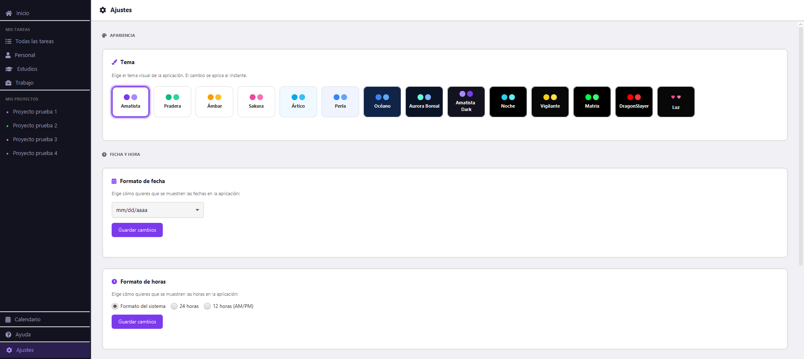
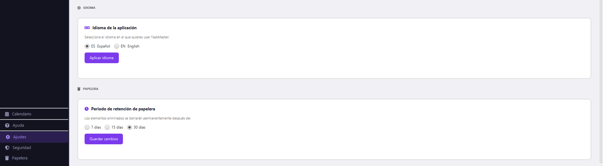
Las opciones disponibles son:
El botón Ayuda del sidebar abre un menú desplegable con dos opciones.
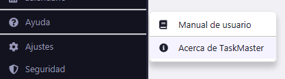
Abre este documento en el navegador predeterminado del sistema. El manual está disponible sin conexión a internet ya que se incluye dentro de la propia aplicación.
Abre un diálogo con información sobre la aplicación:
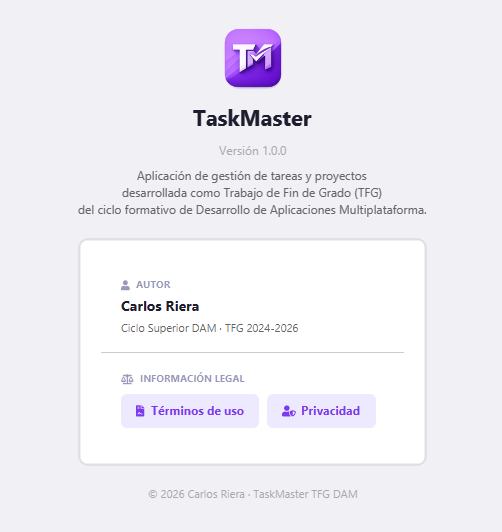
El diálogo muestra el logo de la aplicación, la versión, la descripción y el autor. La sección Información legal incluye acceso a los términos de uso y las políticas de privacidad del usuario.
TaskMaster · Manual de usuario v1.0 · Todos los derechos reservados